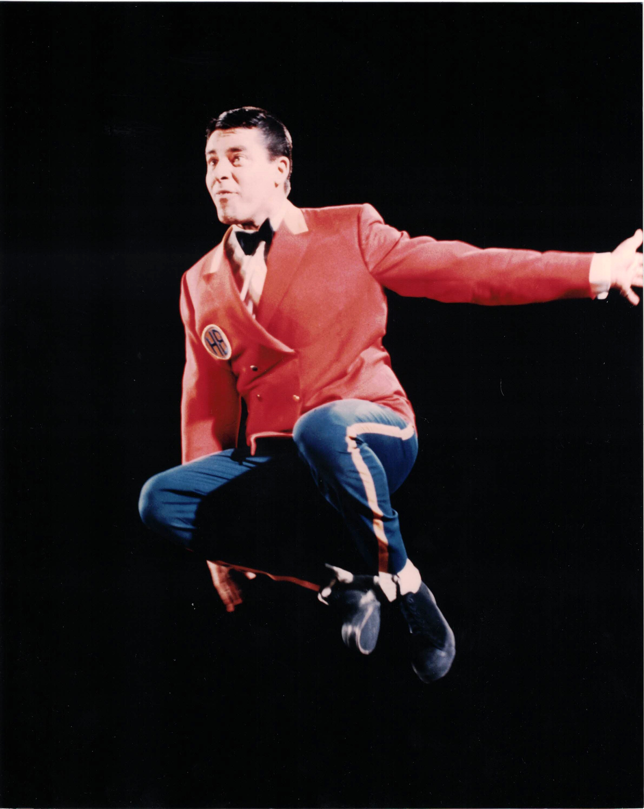

Product No. HEC-0082
$14.99
Shipping: $8.95
Description
8x10 color photograph
Full Description
Jerry Lewis (Deceased) was an American comedian, actor, singer, filmmaker, and humanitarian whose energetic physical comedy made him one of the most recognizable entertainers of the 20th century. Born Joseph Levitch on March 16, 1926, in Newark, New Jersey, he began performing at a young age and later formed a hugely successful comedy partnership with singer Dean Martin. Martin and Lewis became one of America's most popular entertainment teams of the late 1940s and 1950s, appearing in nightclubs, radio, television, and films. Their movies included "My Friend Irma," "At War with the Army," "The Stooge," "Artists and Models," and "Hollywood or Bust." After the partnership ended in 1956, Lewis built a successful solo career. He starred in and often directed films such as "The Bellboy," "The Ladies Man," "The Errand Boy," and "The Nutty Professor." His filmmaking style emphasized visual comedy, exaggerated characters, and inventive camera techniques. Lewis also appeared in more dramatic roles, including a memorable performance in Martin Scorsese's "The King of Comedy." Beyond entertainment, he became closely associated with the Muscular Dystrophy Association and hosted its annual Labor Day telethon for decades, helping raise enormous sums for medical research and patient support. Jerry Lewis died on August 20, 2017, at age 91. His work in comedy, film directing, television, and charity made him an enduring figure in American entertainment and a popular subject among collectors of classic Hollywood memorabilia and autographs.
Condition
Excellent condition